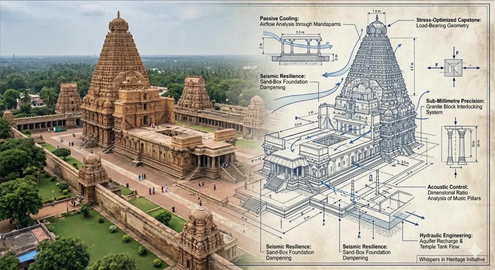
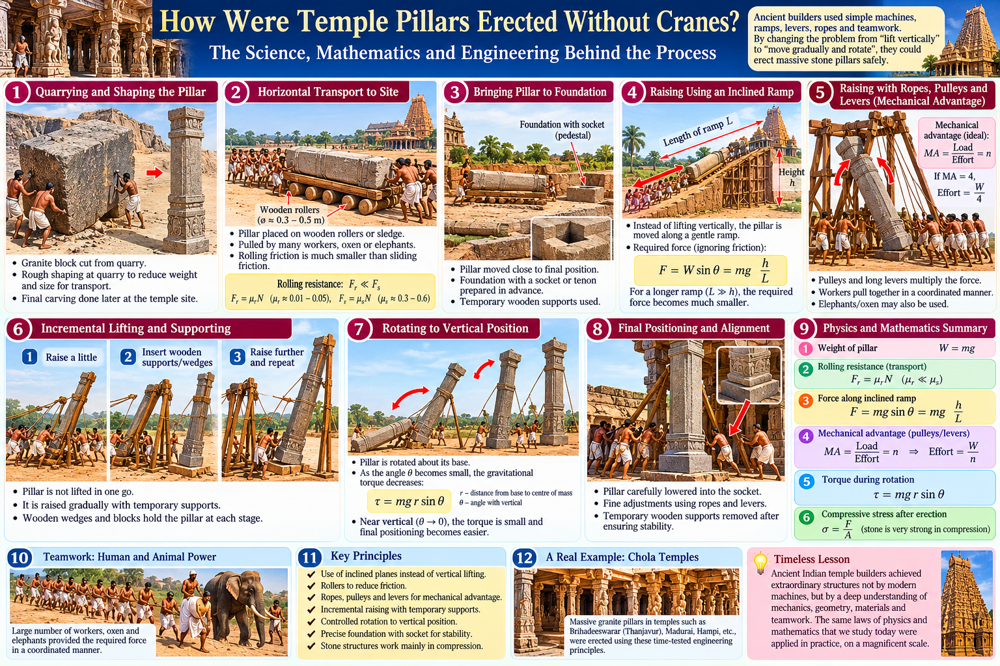

Calculus
Limits, derivatives, integrals, multivariable and vector calculus.
LEARNING PATH IN DEVELOPMENTMATHEMATICS • ENGINEERING • RESEARCH • AI
Exploring mathematics through teaching, modelling, computation, engineering applications and emerging AI technologies.
From a first idea to a working model, discover connections between mathematics, engineering, computation and the world around us.
Find your starting pointA PLACE TO BEGIN
Build understanding step by step—from clear concepts to useful applications and new questions.
Build foundations and see how core ideas connect.
Engineering Mathematics · Calculus · Differential Equations · Linear Algebra · Numerical Methods · Probability 02 / INVESTIGATEMathematical models help us describe complex systems.
Modelling · Computation · Microfluidics · Digital Twins · Scientific Computing 03 / VERIFYExplore how to use AI thoughtfully—and check its reasoning.
AI-assisted learning · GNANA-AI · Reasoning · Scientific Computing · VerificationMATHEMATICS
Each topic can build from an intuitive idea toward equations, examples, applications and experiments.
Limits, derivatives, integrals, multivariable and vector calculus.
LEARNING PATH IN DEVELOPMENTOrdinary and partial differential equations, from models to numerical solutions.
LEARNING PATH IN DEVELOPMENTMatrices, vector spaces, transformations and eigenvalues.
LEARNING PATH IN DEVELOPMENTFunctions of a complex variable and their applications.
LEARNING PATH IN DEVELOPMENTFourier and Laplace transforms for signals and systems.
Read E-book LEARNING PATH IN DEVELOPMENTModels for uncertainty, data and inference.
Read E-book LEARNING PATH IN DEVELOPMENTApproximation, error analysis and computational solutions.
LEARNING PATH IN DEVELOPMENTCONCEPT → FORMULA → VISUALIZATION → EXAMPLE → APPLICATION → EXPERIMENT
ENGINEERING MATHEMATICS
Explore how mathematical ideas describe engineering systems. The topic hubs will grow around concepts, worked examples and applications.
Start with existing calculus postsENGINEERING MATHEMATICS
Concise topic pathways for engineering learners. Detailed objectives and practice sets will be added as verified teaching material is supplied.
CAREER DEVELOPMENT
Four-Year Journey from Engineering Student to Industry-Ready Professional
Four-year career roadmap for Computer Science and Engineering.
View Career RoadmapFour-year career roadmap for Electronics and Communication Engineering.
View Career RoadmapFour-year career roadmap for Electrical and Electronics Engineering.
View Career RoadmapFour-year career roadmap for Mechanical Engineering.
View Career RoadmapFour-year career roadmap for Civil Engineering.
View Career RoadmapMATHEMATICS BEHIND TEMPLE ENGINEERING
Explore the forces and structures behind monumental building. Engineering models help explain principles; they do not establish a particular historical method.

Ramps, rollers, sledges, friction, and force.
ExploreSupports, levers, controlled rotation, and torque.
ExploreCompression, load transfer, foundations, and arches.
ExploreWeight: mass × gravity.
Dry-sliding friction model.
Torque for perpendicular force.
Average normal stress.
Average pressure over area.
Evidence, interpretation, reconstruction, and simplified models are distinct; formulas alone do not verify historical methods.
How does a ramp change the force needed to move a heavy block?
For a block on a straight ramp, the ideal uphill force is the component of its weight along the slope:
Fideal = mg sin θ · sin θ = h/L
Substituting the ramp geometry gives Fideal = mgh/L. This ideal model excludes friction and assumes steady motion. Real transport can involve rolling or sliding resistance, uneven ground, ropes, and human or animal power; the calculator below estimates sliding friction for a simplified ramp.
Sliding block, straight ramp, constant-speed uphill motion.
F = mg(sin θ + μ cos θ); θ = arcsin(h/L)
g = 9.80665 m/s². Excludes acceleration, rolling resistance, and equipment losses; 1 tonne-force = 1000 kg × g.
How might a heavy stone pillar be raised and aligned?
A conceptual engineering reconstruction combines a prepared foundation, temporary supports, and controlled lifting. It is an analytical model, not a verified method for every temple.
τg = mgr sin θ
With θ measured from vertical, gravitational torque falls toward zero as the pillar approaches vertical.

Model the pillar as a rigid body pivoting about a temporary support. If its centre of mass is distance r from the pivot, its weight mg acts vertically and has moment arm r sin θ when θ is measured from vertical. Thus the gravitational torque magnitude is τg = mgr sin θ: it is greatest when the pillar is horizontal (θ = 90°) and approaches zero as it becomes vertical (θ → 0).
This simplified model omits changing contact points, support reactions, rope geometry, impacts, and material limits. Actual forces depend on the chosen lifting arrangement.
Stone structures remain stable when loads pass safely through their supports.
Compression transfers loads through stone members to the foundations; arches guide forces along a line of thrust.
σ = F/A · p = W/A
Stability depends on geometry, loading, material, and support conditions.
σ = F/A is average normal stress over a loaded area, while p = W/A is average pressure from weight over a supporting area. These averages do not describe local stress concentrations; a full structural assessment also considers material behavior, joint contact, geometry, and boundary conditions.
RESEARCH & MATHEMATICAL MODELLING
Research details to be added. No results, publications or project claims are implied by these topic labels.
RESEARCH SQUARE
Research preprints linked to their supplied DOI records.
Presents a semi-analytical verification and parameter-estimation framework for Pospischil-type cortical neuron models, cross-validated on mouse and human recordings.
Read PreprintDevelops a neutrosophic dependent-state sampling plan for truncated lithium-ion battery cycle-life testing under state-of-health uncertainty.
Read PreprintQuantifies sodium-ion battery state-of-charge uncertainty with Laplace-based Hermite collocation, HPM validation and HPPC calibration.
Read PreprintModels a closed-loop supply chain with battery state-of-health effects and adaptive neutrosophic uncertainty across cost, emissions and shortage objectives.
Read PreprintUses renormalization-group analysis to describe a proposed discrete-scale-invariance multicritical point in a two-dimensional disordered Class D superconductor.
Read PreprintNumerically examines how electrohydrodynamic actuation affects pulsatile flow and wall-shear dynamics in vascular-on-chip systems.
Read PreprintIntroduces a memristive model of trans-epithelial resistance in a breathing lung-on-chip and analyzes its simulated dynamic response.
Read PreprintDevelops and validates a dual-substrate glucose-oxidase biosensor model, including oxygen dependence and electrochemical impedance analysis.
Read PreprintThese records are presented as preprints and link to their supplied DOI pages.
MATHEMATICS × ARTIFICIAL INTELLIGENCE
Artificial Intelligence can support mathematical learning, problem solving, scientific computing, and research. Explore how mathematical concepts connect with AI, while developing the ability to critically examine and verify computational results.
01 / LEARN
Use AI as a study aid that can explain, question, and illustrate mathematical ideas. Keep the learner responsible for the reasoning and final verification.
Use explanations and practice prompts to revisit concepts at an appropriate level.
Ask for a sequence of steps, then identify which definitions and results justify each one.
State the problem, known information, notation, and the kind of explanation you need.
Compare an explanation with course definitions, a textbook, or an independent derivation.
Check whether each conclusion follows from the preceding assumptions and statements.
Use a worked example to study a method, then solve a related problem without copying it.
Rework the result and test it by substitution, estimation, a second method, or units.
Organize mathematical tasks into explicit steps and check each generated result. Approved GNANA applications are reserved for the lab below.
Check unfamiliar formulas, unsupported steps, and citations against reliable mathematical sources.
Write down the question and what is known.
Ask AI to show the method and intermediate steps.
Check the definitions, conditions, and notation used.
Repeat the reasoning without relying on the generated answer.
Use a mathematical check appropriate to the problem.
02 / EXPLORE
Explore standalone GNANA mathematical and educational applications designed to support learning, computation, visualization, and mathematical exploration.
Search Thirukkural couplets and explore source-based responses in Tamil.
Tamil searchSource-based answersSpeech support
Launch BotExplore numerical roots of algebraic and transcendental equations.
Root findingEquation inputVoice option
Launch BotExplore local weather forecasts and visualize wind conditions by city.
Hourly forecastWind mapOpen-Meteo data
Launch BotPlot functions and curves across two-dimensional and three-dimensional views.
CartesianParametric & polar3D graphs
Launch BotGenerate activities from the Engineering Mathematics Quiz Handbook.
Quiz sheetsTreasure HuntHandbook reader
Launch BotAnalyze datasets with descriptive statistics and distribution tools.
CSV inputSummary statisticsDistributions
Launch BotCompute matrix operations and explore core linear algebra problems.
DeterminantsLinear systemsEigen analysis
Launch BotStudy calculus topics with interactive computation and visualization.
Limits & derivativesIntegrationDifferential equations
Launch BotBrowse a searchable reference of mathematics and engineering formulas.
Formula searchFavoritesConditions
Launch BotEstimate and compare Indian income tax scenarios across tax periods.
Regime comparisonTax-year guidanceOfficial sources
Launch BotConsult a limited educational reference for medicine information and comparisons.
SearchFormulation compareSafety sources
Launch BotStandalone applications open in a new tab. Some tools load supporting libraries or live data from external services and need an internet connection. Each tool’s own scope and limitations apply.
03 / INVESTIGATE
Computational tools can support parts of a research workflow. Mathematical claims, numerical results, interpretations, and references still require independent examination.
Use search and language tools to explore terminology and candidate sources; confirm every source directly.
Compare possible formulations, variables, assumptions, and boundary conditions.
Use computational methods to explore models and organize reproducible calculations.
Examine discretization, convergence, stability, and error for a chosen method.
Vary parameters systematically and record the setup, data, and observed outcomes.
Use computation to investigate a conjecture, while distinguishing evidence from proof.
Check outputs against the mathematical model, known limits, and independent calculations.
State the research question and scope.
Specify variables, assumptions, and equations.
Explain why each method fits the formulation.
Record parameters, inputs, and computational settings.
Check scale, sensitivity, and plausible alternatives.
Use analysis, benchmarks, or an independent method.
Record procedures, sources, code, and limitations.
AI-generated research claims, derivations, numerical results, and references are suggestions to verify—not evidence by themselves.
04 / CONNECT
Mathematical structures help describe learning algorithms and the data they use. These connections are starting points for study, not a complete account of AI.
Vectors x ∈ ℝⁿ, matrices, and transformations
Matrix operations represent transformations and organize high-dimensional data; eigenvalues and eigenvectors describe important properties of some transformations.
Application: representing feature data and studying linear models.
Derivatives and gradients such as ∇θL
Derivatives describe how an objective changes as parameters vary; gradient-based methods use this information in optimization.
Application: examining parameter updates in a differentiable model.
Distributions, inference, and P(y | x)
Probability and statistics provide tools for describing uncertainty, analyzing data, and drawing conclusions from samples.
Application: comparing predictions with observed data and uncertainty estimates.
A dynamical model such as dy/dt = f(y,t)
Differential equations describe evolving systems; computation can help explore numerical solutions and parameterized models.
Application: studying a model of change over time and checking its numerical behavior.
05 / VERIFY
A plausible answer is not necessarily correct. Trace the reasoning, check the mathematics, and independently test the result.
CHECK THE CLAIM
A result of 20 m/s can be checked by converting both units independently.
72 km/h × (1000 m / 1 km) × (1 h / 3600 s)= 20 m/sThe kilometres and hours cancel, leaving metres per second.
MATHEMATICS VIDEO LIBRARY
Browse videos and articles connecting mathematics with real systems.
MATHEMATICS IN REAL LIFE / ENGINEERING APPLICATIONS

Mathematics in Flight / Aerodynamics
Watch on YouTube
Structural Engineering
Watch on YouTube
Bridge Engineering
Watch on YouTube
Mathematical Modelling
Open Post
Traffic Flow and Mathematical Thinking
Open PostVideo selections to be added.
LINKS PENDINGVideo selections to be added.
LINKS PENDINGVideo selections to be added.
LINKS PENDINGVideo selections to be added.
LINKS PENDINGVideo selections to be added.
LINKS PENDINGVideo selections to be added.
LINKS PENDINGVideo selections to be added.
LINKS PENDINGLEARNING RESOURCES
Explore selected workshop and research materials alongside the learning library.
TEACHING METHODOLOGY
Teaching-resource sections are mapped below. Verified Drive links or source files are still needed for materials that are not present in this local project.
Open the verified framework overview document in Google Drive. The file is currently restricted to its owner and authorized accounts.
Open Framework Overview (DOCX)GOOGLE DRIVE ACCESS REQUIRED · OWNER VIEW TESTED
Two existing model Engineering Mathematics lesson plans are available in Google Drive. Access remains limited to authorized accounts.
GOOGLE DRIVE ACCESS REQUIRED · OWNER VIEW TESTED
Verified GNANA AI Lesson Plan Generator resources. Google Drive access is currently restricted to the owner and authorized accounts.
GOOGLE DRIVE ACCESS REQUIRED · OWNER VIEW TESTED
These six participant-review documents are separate from the existing interactive sample quizzes. The local copies are marked “NOT APPROVED FOR PUBLIC RELEASE,” so this static site does not expose them as downloads.
01_Rapid_Fire_Participant_v2.docxOpen Document (restricted) Drive currently says Private to you · review copy not approved for public release02_Treasure_Hunt_Participant_v2.docxOpen Document (restricted) Drive currently says Private to you · review copy not approved for public release03_Guess_the_Concept_Participant_v2.docxOpen Document (restricted) Drive currently says Private to you · review copy not approved for public release04_Maths_Charades_Participant_v2.docxOpen Document (restricted) Drive currently says Private to you · review copy not approved for public release05_Relay_Race_Participant_v2.docxOpen Document (restricted) Drive currently says Private to you · review copy not approved for public release06_Missing_Concept_Participant_v2.docxOpen Document (restricted) Drive currently says Private to you · review copy not approved for public releaseINTERACTIVE SAMPLE QUIZZES REMAIN IN THE SEPARATE QUIZ SECTION BELOW
Restricted materials are not displayed or linked here. This public static site has no authentication layer; the Google Drive folder remains private to its owner.
PRIVATE CONTENT AND FOLDER LINK NOT EXPOSED
Browse 23 images: 21 content slides, one title slide and one thanks slide.
View Workshop SlidesFour coordinated resources for literature discovery, paper preparation and research workflow development.
Browse Toolkit FolderA research prompt library for supporting literature discovery and research development.
Research_Prompt_Library.pdfOpen Research Prompt Library (PDF) A 200-prompt resource for research and manuscript preparation.
Research_Paper_Generation_Prompt_Book_200.pdfRead PDF Research_Paper_Generation_Prompt_Book_200.docxGet Editable DOCX The master research pipeline organized into seven phases.
MASTER_Research_Pipeline_All_7_Phases.pdfOpen Master Research Pipeline (PDF) Detailed prompt templates for the five-phase, twelve-step FSC-GAIM-PReDFA research framework. AI denotes Abstract and Introduction.
FSCGAIMPRDFA_Prompt_Templates.pdfRead 12-Step Templates (PDF) FSCGAIMPRDFA_Prompt_Templates.docxGet Editable Templates (DOCX) Open the e-book for reading or download.
Read / Download BookOpen the e-book for reading or download.
Read / Download BookSix interactive rounds designed to develop mathematical thinking and encourage active participation.
Explore Quiz ActivitiesAnswer short mathematical questions in a timed round.
Start QuizFollow mathematical clues through a station-based team activity.
Start QuizIdentify a mathematical concept from a sequence of clues.
Start QuizUse team charades and prompts to communicate mathematical ideas.
Start QuizWork through linked mathematical steps as a team.
Start QuizIdentify a missing concept in an engineering application sentence.
Start QuizFiles and viewing links to be added.
Files and viewing links to be added.
Files and viewing links to be added.
Files and viewing links to be added.
Verified tutorials to be added.
Learning demonstrations will be collected here.
Descriptions and links to be reviewed.
Open course links to be selected.
FROM THE EXISTING SITE
Browse identified articles from the existing GNANA MATH site.
ABOUT DR. V. GNANARAJ
Retired Professor of Mathematics, Thiagarajar College of Engineering, Madurai. Further biography details will be added from verified material.
CONTACT
Contact details to be added by the site owner.